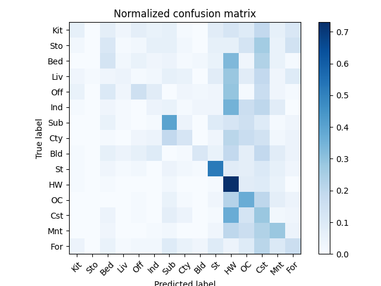
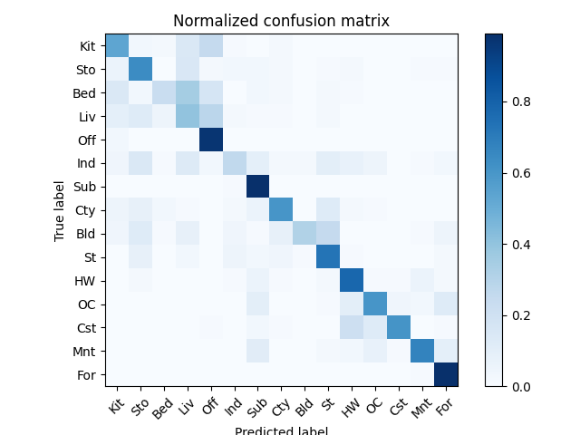
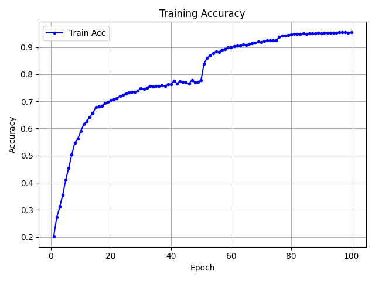
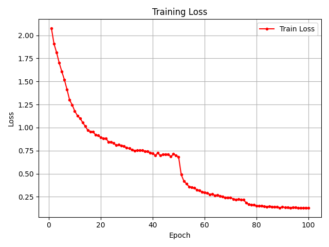
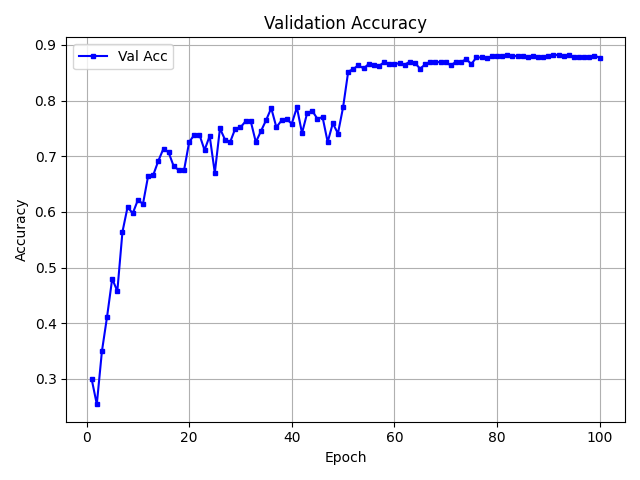
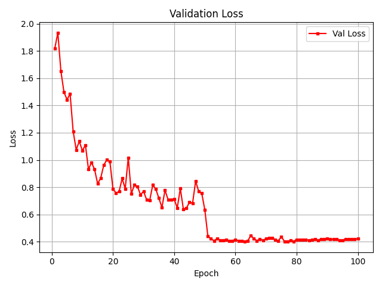
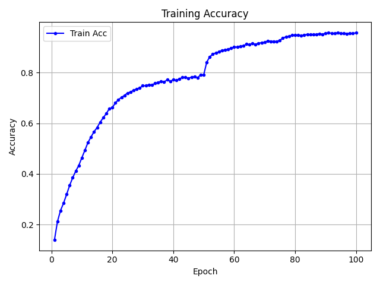
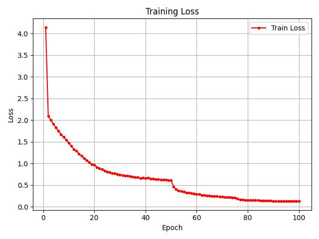
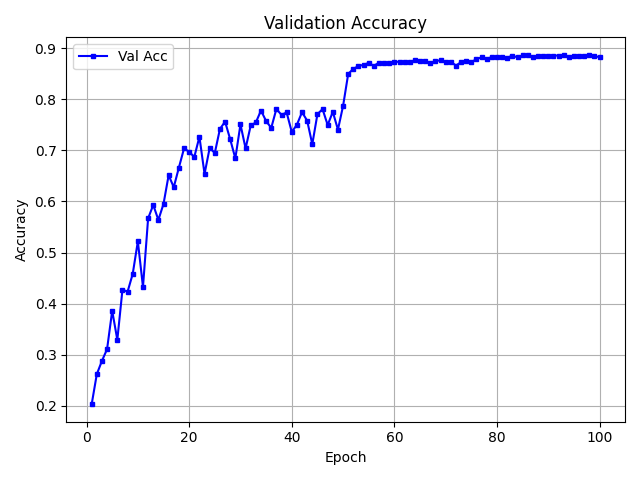
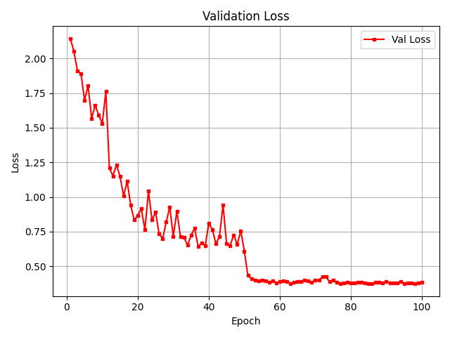

Bag-of-Words Scene Recognition
Classical computer vision pipeline for 15-class scene recognition. Two feature representations were evaluated with a custom K-Nearest Neighbor classifier on a dataset of 100 train / 100 test images per category.
Pipeline
Feature representations
Tiny Image
Each image is center-cropped and resized to 16×16, yielding a 256-dimensional feature vector. Zero-mean normalized and scaled to unit length.
Bag of SIFT
Dense SIFT descriptors (128-dim) are extracted from all training images. K-Means clustering (k=400) builds the visual vocabulary. Each image is then represented as a normalized frequency histogram over the 400 visual words.
KNN classifier
Custom implementation (no sklearn KNeighborsClassifier). k=15 neighbors, L1 distance via scipy.spatial.distance.cdist, majority vote. L1 distance outperforms L2 for histogram features.
Results
Confusion matrices


CNN Image Classification
CIFAR-10 classification (32×32 RGB, 10 classes) using two CNN approaches: a custom VGG-style network trained from scratch, and a modified pretrained ResNet18.
Model A — MyNet (from scratch)
VGG-style CNN with Batch Normalization
Four convolutional blocks progressively doubling channels (64→128→256→512), each ending with 2×2 MaxPool. Classifier head uses two FC layers with Dropout(0.5).
Model B — ResNet18 (modified)
Pretrained ResNet18 adapted for 32×32 inputs
Two key modifications: (1) conv1 changed from 7×7/stride-2 to 3×3/stride-1 to preserve spatial resolution on small inputs; (2) first maxpool replaced with Identity to avoid aggressive downsampling. Final FC replaced for 10-class output.
What makes ResNet different?
ResNet introduces residual (skip) connections: each block outputs F(x) + x rather than just F(x). This allows gradients to bypass layers during backpropagation, solving the vanishing gradient problem and enabling effective training of much deeper networks — something plain CNNs like MyNet cannot do at scale.
Training setup
Data augmentation
Performance summary
Learning curves — MyNet




Learning curves — ResNet18




Key observations
Part 1 — BoW
Bag of SIFT outperforms Tiny Image by 39.5 percentage points. Tiny images discard local texture and are sensitive to lighting and spatial layout; BoW captures discriminative mid-level patterns orderlessly.
The Bag of SIFT confusion matrix shows errors concentrated among visually similar categories — Coast vs. OpenCountry, Street vs. InsideCity — which is semantically expected. Tiny Image shows near-uniform confusion across all categories.
L1 distance (Minkowski p=1) outperforms L2 for normalized histograms, consistent with literature on sparse high-dimensional features. Using k=15 neighbors with majority vote improves robustness over 1-NN.
Part 2 — CNN
Both models exceed the strong baseline (88%). The modified ResNet18 slightly outperforms MyNet (88.7% vs. 88.2%), but the gap is small given the comparable parameter counts.
The ResNet18 learning curves show faster early convergence and smoother validation loss decay, a direct benefit of pretrained ImageNet weights and residual connections. MyNet shows slightly higher training-validation gap, indicating mild overfitting despite Dropout regularization.
The conv1 and maxpool modifications to ResNet18 are critical for 32×32 inputs. Without them, the original 7×7/stride-2 conv + maxpool would reduce the feature map to 8×8 after the first two operations, discarding most spatial information in shallow layers.
Potential improvements
- 1 Spatial Pyramid Matching (Part 1): Divide the image into sub-regions at multiple scales and concatenate per-region BoW histograms. This reintroduces spatial layout information lost in the orderless BoW, substantially improving scene recognition accuracy.
- 2 Semi-supervised learning (Part 2): Apply the trained ResNet18 to the 30,000 unlabeled images. Pseudo-label samples with confidence above a threshold and add them to the training set for a second fine-tuning round.
- 3 Stronger augmentation: CutMix, Mixup, or AutoAugment policies tuned for CIFAR-10 can push accuracy above 90% on ResNet18 without architectural changes.
- 4 Cosine annealing LR schedule: Replace the step-decay schedule with cosine annealing with warm restarts for smoother convergence and better final accuracy.
- 5 Fisher Vector / VLAD encoding (Part 1): Replace the simple BoW histogram with Fisher Vector or VLAD encoding, which capture higher-order statistics of descriptor distributions and significantly outperform standard BoW on scene benchmarks.